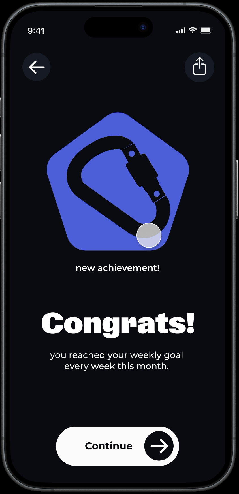
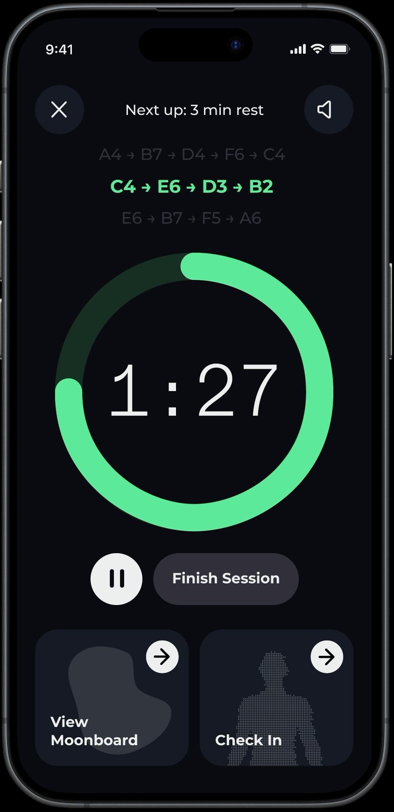
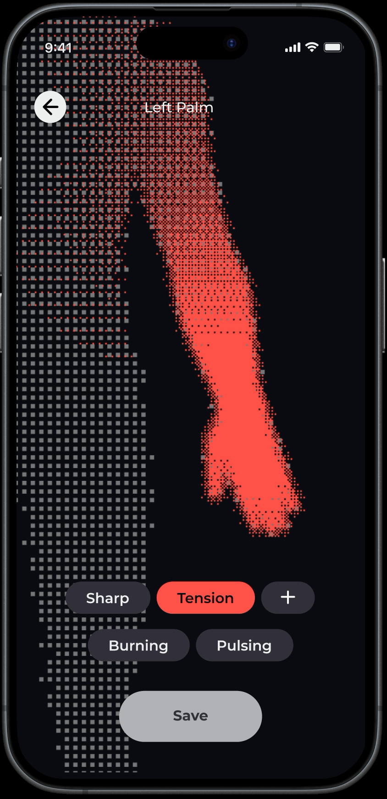

Hi, I’mItay Ben Mayor, a multidisciplinary designer based inTel Aviv. I work acrossInteractive Experiences,Brand, Motion &Typography.
Currently in my final year of Visual Communication at Bezalel Academy of Arts & Design
Works
no. 1 Reach
(2026)ux-ui / Product / Interactive / Branding
no. 2 Israel Museum Index
(2026)Web / Layout / Interactive / Typography
no. 3 Record-Day
(2026)Motion / Branding / Posters / IMG-Making
no. 4 HAVEN
(2026)Motion / ux-ui / Interface
no. 5 Poster Archive
(2023-2026)Posters / Typography / IMG-Making / Print / Motion
no. 1Reach(2026)ux-ui / Product / Interactive / Branding



No. 1Reach Landing Page & App ux-ui / Product / Interactive / Branding no. 2Israel Museum Index(2026)Web / Layout / Interactive / Typography No. 2Israel Museum Index Website Web / Layout / Interactive / Typography no. 3Record-Day(2026)Motion / Branding / Posters / IMG-Making No. 3Record Day Branding in Motion Motion / Branding / Poster / IMG-Making no. 4HAVEN(2026)Motion / ux-ui / Interface / Branding No. 4HAVEN Brand & Interface Motion / ux-ui / Interaction no. 5Poster Archive(2026)Posters / Layout / Typography / Print No. 5Poster Archive Posters Posters / Layout / Typography / Print